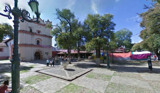
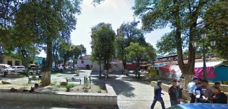
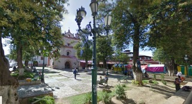
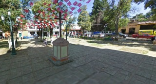
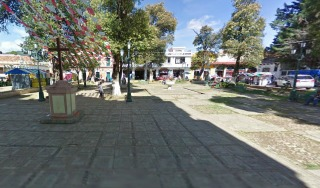

Construida por los franciscanos después de la llegada de los mercedarios y los dominicos en 1575. Al frente fray pedro de feria tratando de contrarrestar la rigidez de los dominicos. Esta plazuela como su iglesia fueron el tercer patio cuadrangular establecidos en la ciudad.
Se encuentra ubicado en la Avenida Insurgentes y la calle Pedro Moreno.
Si usted se encuentra ubicado en la plaza de la paz viendo de frente hacia la catedral puede caminar hacia su derecha pasando por la plaza 31 de Marzo como referencia encontrará el Banco Santander y Frente a este la Farmacia Similar entre estos dos lugares encontrará el andador eclesiástico, camine tres cuadras sobre el andador hasta encontrase de frente con el arco del carmen para dar vuelta a la izquierda y tomar la calle Hermanos Dominguez, camine una cuadra por la nueva calle y al llegar a la esquina usted encontrará de frente la plazuela de San Francisco.
En el lugar usted puede realizar actividades como:
* Fotografía
* Visita a iglesias
* Asistencia a fiesta popular





posicione el mouse sobre las imágenes